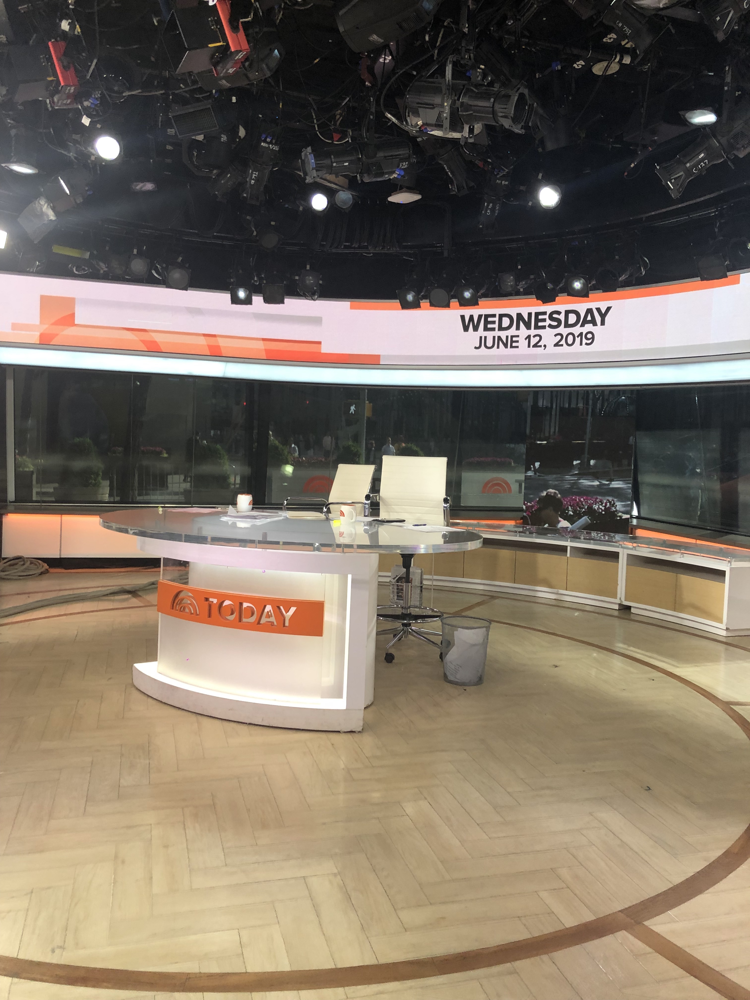
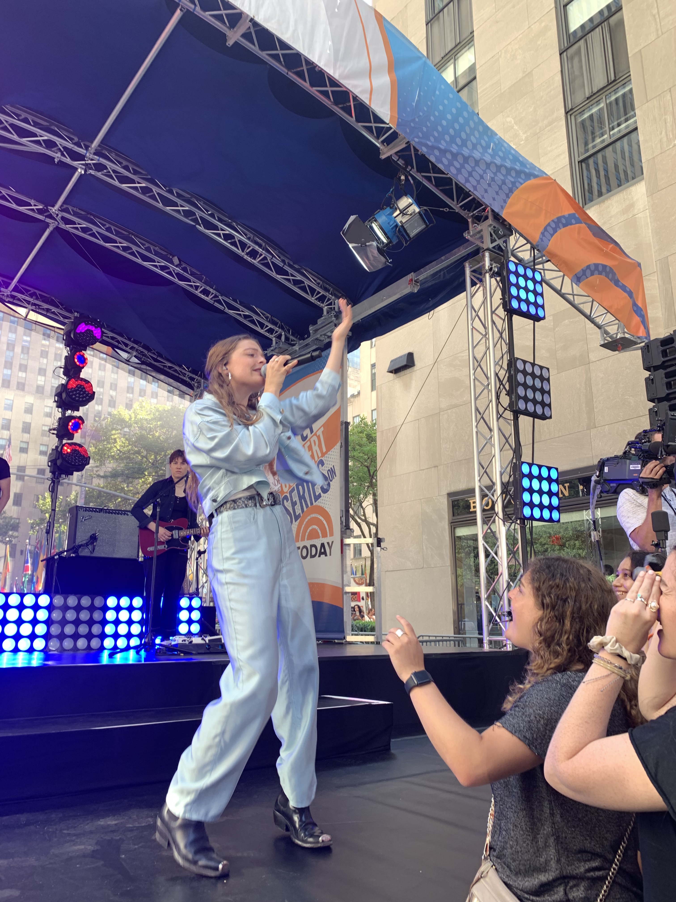

On this page I will explain what it is like working at NBC and the different tasks I completed, as well as what my day to day was like while working in the music booking department.
What is NBC?
NBC is The National Broadcasting Company or known as a television network that is a flagship property of NBCUniversal, a subsidiary of Comcast. The network is headquartered at 30 Rockefeller Plaza in New York City. It is home to many of the shows we know and love like Friends, Will and Grace, The Today Show, Saurday Night Live and more.

What I Did At My Internship:
Every day at my internship was different. I would do a range of different tasks from contacing management teams for people we wanted to book on the show, to collected research on celebrities. I would use databases to find out when certain people were going to be in town and what project they were promoting at the time. I would sit in on weekly booking meetings where the booking team would present options for people to have on the show. My job was to put together pitch packets that consisted of, a picture of the individual, a description of the project they were promoting and the dates they are available. Every Friday morning I would be at work at 3am to start setting up for the plaza concert. I would start the morning off by passing out credentials to fans waititng in line. Once that is done, I would sign in VIP and escort them to their designated section in the crowd. The rest of the time until the concert started was spent running to and from the green room and helping with any additional tasks. Once the concert began, I was able to stand and enjoy it. Some of the best days were spent getting to work in the studio and see the anchors do their segments.
Artist Performances:
Here are some videos and images of artists that I have worked with, and their performances, while working at the Today Show.
When Lizzo came to perform on the plaza, we had one of the biggest crowds we have ever had. She made her grand entrance by driving onto the plaza in a white corvette, singing her hit single "Truth Hurts". She brought out her famous flute to do her flute solo and the crowd went wild.
The Jonas Brothers came to perform at the Today Show for the release of their reuinion album: "Happiness Bgeins". They sang a few songs from their new album along with some of their old songs as well. It was one of the biggest crowds all summer because of the nostalgia that people felt hearing their music. People were lining up since the night before the concert. They put on a great show, and kept the whole crowd excited. My job during the show was to escort people to and from the VIP section.

When Maggie Rogers came to perform on the plaza she sang three songs from her new album; "Heard It in a Past Life". She was promoting her concert tour around the states. There was a huge turnout of people who came to see the performance.